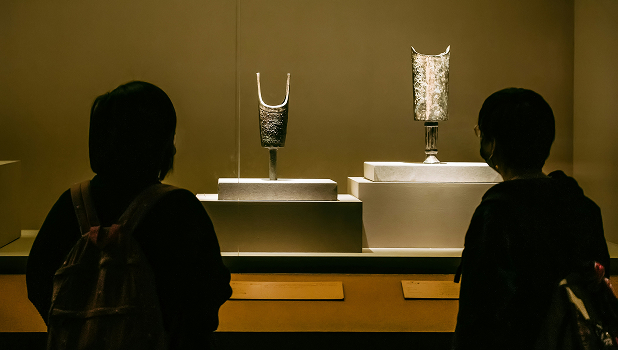
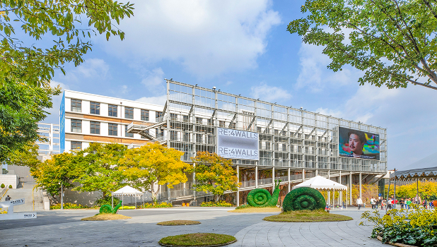

팝업
관람시간 안내
관람시간
- 관람일 월 ~ 금 09:30~17:30 (토요일은 예약자에 한해 관람가능)
- 휴관일 주말, 공휴일 및 학교에서 정하는 휴관일
관람료
- 금액 무료
전시안내
more상설전시

상설전시 - 제 1전시실
우리 박물관은 청원 두루봉동굴유적, 단양 수양개유적, 청원 소로리유적 등에서 조사된 석기·동물화석·뼈연모·볍씨·인류화석 등 약 1,200여 점의 유물을 전시하여 구석기문화를 한눈에 이해할 수 있도록 구성되어 있다. 또한 이 구석기문화 전시실은 국내에서 가장 큰 규모와 다양한 전시 내용을 갖추고 있어, 전문성과 독창성을 지닌 전시공간으로 평가받고 있다.
자세히 보기야외전시

야외전시
충북대학교박물관 야외전시장은 약 3,000평 규모로 조성된 열린 전시 공간으로, 자연 속에서 다양한 석조 유물을 가까이에서 관람할 수 있다. 제천 황석리 선돌과 방흥리·우산리 고인돌, 통일신라 석물, 고려 3층 석탁, 조선 5층 석탑 등 시대별 석조 유물 60여 점이 전시되어 있으며, 자연광 속에서 유물의 조형미를 생생하게 느낄 수 있는 교육·문화 체험 공간으로 사랑받고 있다.
자세히 보기그룹 탭01
교육
현재팝업번호
/
전체팝업번호
안내
현재팝업번호
/
전체팝업번호